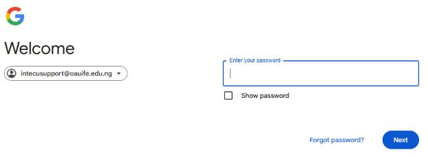

Did you know that you can change the password to your OAU e-mail account without coming to INTECU? To do this, click on the “Forgot Password?” on the login page of your e-mail account and supply the required information.

Please note that, to be able to recover your password, you must have added recovery information to your account. This recovery information includes your Phone Number and an alternate E-mail address. Click on this link to learn how to update your account profile with the recovery information.
Thank you.